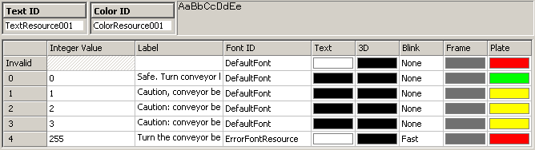
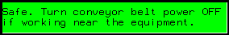
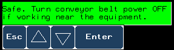
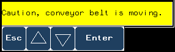
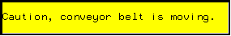

|
|
|
|
|
|
|
|
Message and Image Displays can also accept touch inputs. You can set up the display to pop up a keypad when touched, where you can input the desired state value into the associated variable. Or, you can set up the display to change to the next or previous state when touched.
This example builds on the example from Sections 14.4 and 14.5 by enabling data inputs to the Message Display.
Set up the integer variable that will control the conveyor belt.

On the panel, draw a Message Display.
In the General tab of the Message Display Settings dialog box, define the integer variable and number of states.
In the Input Mode tab, select the Enable Input Mode check box, and select Change-On-Enter in the Display Popup Keypad option.
Using this selection, a small popup keypad will display allowing you to increase or decrease the state, which is accepted when you touch the Enter key.

For information about the other input options, see Section 14.2.2, Input Mode Tab.
Click the General tab, and then click the New Resource icon  . In the New Resource dialog box, confirm the resource properties and click OK.
. In the New Resource dialog box, confirm the resource properties and click OK.
In the Color and Text Resource editors, define the color, integer value, and text labels to complete setting up the message display.

The Message Display shows the label for the current state as defined in the associated Text Resource.

When you touch the message display, a keypad pops up.

Touch the up/down arrows to increment or decrement the state. In this example we are using a Change-On-Enter keypad. The variable value does not actually change until we touch the Enter key. When using a Change-Immediate keypad, the variable value actually changes when touching the up/down keys.

Touch the Enter key to change to the defined state. Touch the Esc key to cancel the input.
